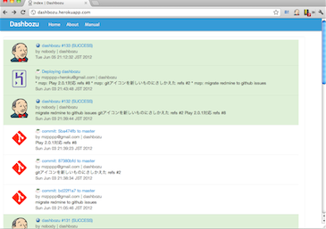

プロダクト
AsakusaSatellite | A realtime chat application for Developers

AsakusaSatellite は、開発者向けのリアルタイムチャットア プリケーションです。開発者間のコミュニケーション品質を向上 し、ソフトウェア開発にリズムをもたらします。
Dashbozu | A missing line for software development
Redmine, git, Jenkins などプロジェクト管理ツールの状態を横断的かつリアルタイムに表示する Web アプリケーションです。 一つの画面でプロジェクトの”今”の状態を把握できます。
KariyaSiesta | A flexible coding style checker for C

KariyaSiesta は、C 言語向けのコーディングチェッカ CX-Checker の fork プロジェクトです。 コーディング規約はXpathを用いて簡単に拡張できます。
debeso | A snippet stock application for Developers

debeso は、開発者向けのスニペットストックです。開発者間の 知識を共有し、知識が行方不明になることを防ぎます。
QuoteIt | thumbnail/quote boilerplate

QuoteItは各種Webサービスの埋め込み用HTMLを統一的に取得できるWebAPIです。バックエンドにwedataを採用しているため、誰でも引用元を簡単に追加可能です。
SnowRabbit | Tweet with the desktop rabbit

OSX用のTwitterクライアントです。Mac OS X Snow Leopard/Lionで動作します。 following(friend)のグループ化表示ができるので、大勢followしている人にお勧めです。